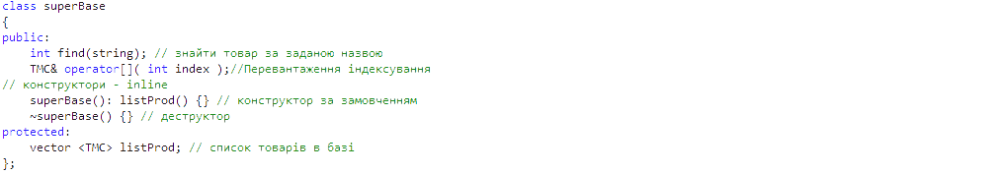
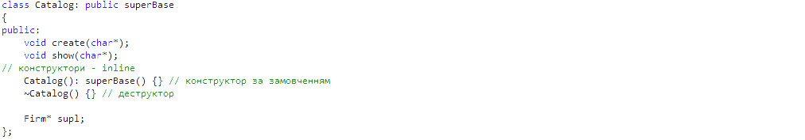

Технологія розробки даної версії
Створення програмного коду
В рамках даної версії буде здійснюватись доповнення коду попередньої версії новими елементами. Тому для початку роботи необхідно скопіювати проект з минулою версією та вносити зміни в цей проект-копію.[повернутися]
Інтерфейси нових класів
Інтерфейс класу superBase:
Інтерфейс класу Catalog:

[повернутися]
Специфікація функцій для даної версії
| Прототип функції | Семантика | Параметри | Призначення (семантика) параметрів |
|---|---|---|---|
int main(void) |
|||
void TMC::CreateDocs(int start,int end, VNZ university, |
int start, |
||
void MTDB::add(VNZ university, Firm suplier, int br) |
VNZ university, Firm suplier,int br |
||
void MTDB::del(VNZ university, Firm suplier, |
VNZ university, Firm suplier, |
||
void VNZ::putBalance(int br) |
int br |
||
void VNZ::writeOff(bool model,int br) |
bool model,int br |
||
ostream &operator<< (ostream &stream,VNZ u) |
ostream &stream, |
||
MTDB* VNZ::operator->(void) |
|||
int superBase::find(string str) |
string str |
||
TMC& superBase::operator[] ( int index) |
int index |
||
void Catalog::create(char* nameFile) |
char* nameFile |
||
void Catalog::show(char* nameFile) |
char* nameFile |
[повернутися]